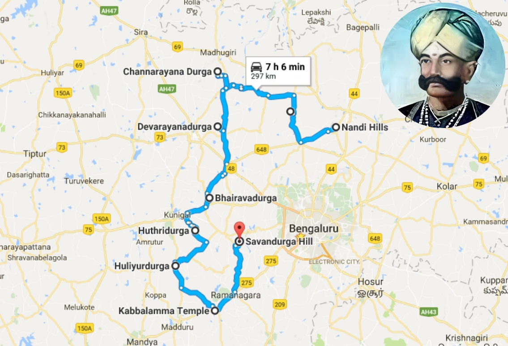
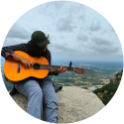

Popular-Experiences
start your new adventure
from Bengaluru to know Bengaluru

explore the navadurgas built by
kempegowda
Not many know about the nine hill forts or Nava durgas on the out skirts of the bustling Bengaluru. Located within 100km of the state capital, the hill forts house the remnants of Karnataka's rich and diverse history.
What adventurers say about us?
Immanuel Jerome
I enjoyed a lot being a first time trekker. The experience was smooth and relaxing. Definitely will suggest for beginners who wants to start trekking.

gayathri Duraisamy
We had a great time with Rage Treks. Being the first time, we all were nervous and anxious at first. But we started enjoying as we started ascending. It was a well planned and budgeted trip..
Kirtida Ravindra Churi
Channagiri betta was our first trek with rage treks and we really enjoyed hiking with the team . We could not have done it on our own. Thanks to Yateesh for leading us on this trek. Definitely gonna go on another trek with RAGE TREKS!
Pratham Umesh Pai
I am usually pretty bad at getting into good physical shape so when a couple of my friends told me about this amazing adventure trip operator and organizer, Rage, I knew it would be perfect for me. They are the best and I find myself appreciating life instead of taking my health for granted.
Sameera
I have been going on treks with Rage for the last 3 months and they are the best. They have a great team of people who are always willing to help and go out of their way to make sure that you have a great time. I would recommend them to anyone looking for an adventure trip from Bengaluru.
Pradyumna Kale
I had heard about Rage Treks from a friend who had gone on a trek with them. I reached out to them and they put together the perfect trip for me. They are very knowledgeable about the routes and helped me plan my itinerary. I would highly recommend Rage for anyone looking for an adventure in Karnataka!